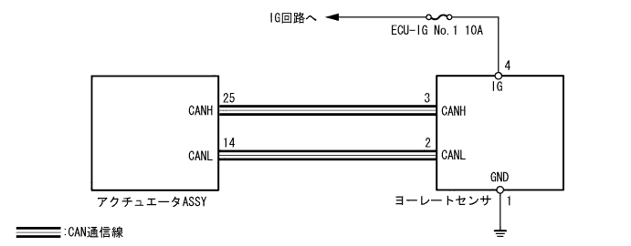
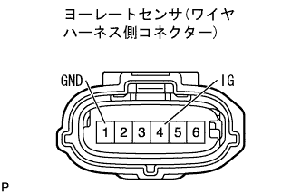

DTC C1381/97 G Sensor Power Supply Voltage Malfunction |
| DTC No. | DTC Detection Condition | DTC Output Related Items |
|---|---|---|
| C1381/97 | At a vehicle speed of 3km/h or more with the IG1 terminal voltage at 9.5 to 17.4V, a G sensor power source malfunction signal is received for 10 seconds or more |
|
| SAE DTC | ABS Light Display Code | VSC Light Display Code |
|---|---|---|
| C1381 | 97 | 43 |

))| Step 1 | Inspect Wire Harness and Connector (Yaw Rate Sensor Power Source) |
Check that the yaw rate sensor connector is not loose, disconnected, etc.
Disconnect the yaw rate sensor connector.
Check that the connector case and terminals are not deformed or corroded.
 |
Using SST (Toyota electrical tester), measure the voltage and resistance between the wire harness side connector of the yaw rate sensor and body ground.
| Tester Connection | Condition | Standard |
|---|---|---|
| 4 (IG) - Body ground | IG ON | 10 to 14V |
| Tester Connection | Condition | Standard |
|---|---|---|
| 1 (GND) - Body ground | Always | Below 1 Ω |
|
| ||||
| OK | |
| Step 2 | Recheck DTC |
Clear the DTCs. (see)
Perform a road test and check the DTCs again. (see)
| Result | Proceed to |
|---|---|
| OK | A |
| Sensor power source malfunction code is output again | B |
|
| ||||
| A | ||
| ||